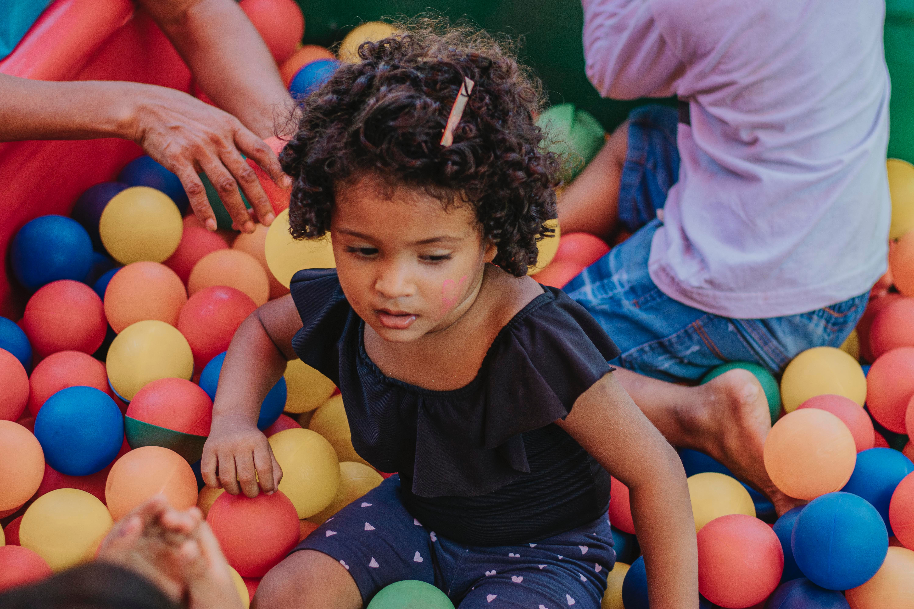

A Creche e Berçário Espaço Ancorar atua há mais de cinco anos trabalhando na área educacional, buscando cuidar com amor e proporcionar às famílias um ambiente educativo acolhedor e seguro que garanta às crianças um pleno desenvolvimento psicológico, cognitivo, intelectual, social, físico e emocional.
CONHEÇA MAIS SOBRE A NOSSA CRECHENossa equipe conta com pedagogos, psicopedagogos, educador físico, nutricionista, monitores, auxiliares de limpeza e segurança. Todos qualificados e periodicamente capacitados através de cursos de formação continuada.
Nossas salas de aula são todas climatizadas, acolhedoras e lúdicas. Temos ainda espaços destinados à berçário, fraldário, dormitório, refeitório, sala de artes, copa e cozinha, banho de sol e integração social.
Nossa equipe conta com pedagogos, psicopedagogos, educador físico, nutricionista, monitores, auxiliares de limpeza e segurança. Todos qualificados e periodicamente capacitados através de cursos de formação continuada.
Atuando na educação há mais de 10 anos. Temos como proposta pedagógica respeitar as fases do desenvolvimento infantil e valorizar a prática de atividades saudáveis que estimulem o crescimento harmônico das nossas crianças no que diz respeito à construção de sua identidade, autonomia e percepção de seu lugar no mundo. Nossos valores fundamentam-se na ética, respeito e estima das relações sociais presentes na infância, partilhando saberes, respeitando as diferenças e ensinando com amor lições importantes para a formação de cidadãos competentes e indivíduos extraordinários. Buscamos oferecer uma educação inovadora e nos tornar referência em qualidade educacional por meio de experiências significativas em um ambiente afetivo onde brincar, cuidar e educar se tornam indissociáveis para o desenvolvimento da criança.
Os nossos alunos terão um cardápio diário balanceado e adequado às necessidades nutricionais de cada faixa etária de acordo com as orientações passadas por nossa equipe de nutrição. Para as mães com bebês menores de um ano oferecemos apoio para iniciar a introdução alimentar de forma participativa e tradicional
Promovemos o contato com a natureza através de experiências práticas, significativas e prazerosas como horta orgânica, jardinagem, minizoo e oficinas de reciclagem que incutam nas crianças a preocupação e zelo com o meio ambiente.
Incentivamos a leitura das nossas crianças com espaço interativo e silencioso para auxiliar a sua interatividade com o mundo das letrinhas.
Das 7:00h às 18:00h
Das 7:00h às 12:00h (Matutino)
Das 13:30h às 18:00h (Vespertino)
Das 7:00h às 12:00h (Com Almoço)
Das 13:00h às 18:00h (Com Jantar)
Utilize o formulário abaixo como um Canal Direto com a Creche e Berçário Espaço Ancorar.
Através dele você pode enviar, dúvidas, críticas, elogios ou sugestões.
Sua opinião é muito importante!